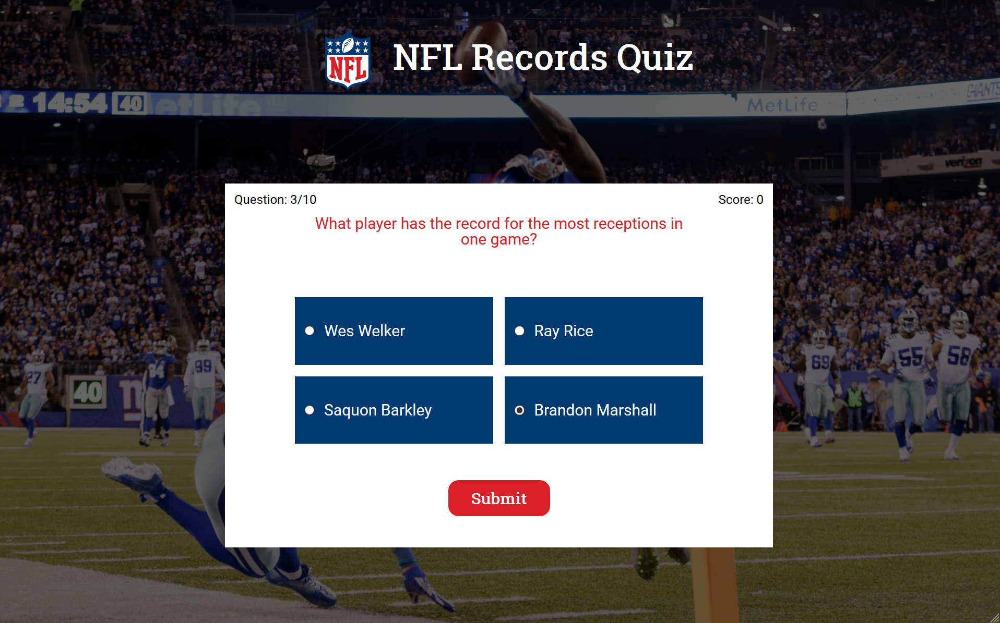
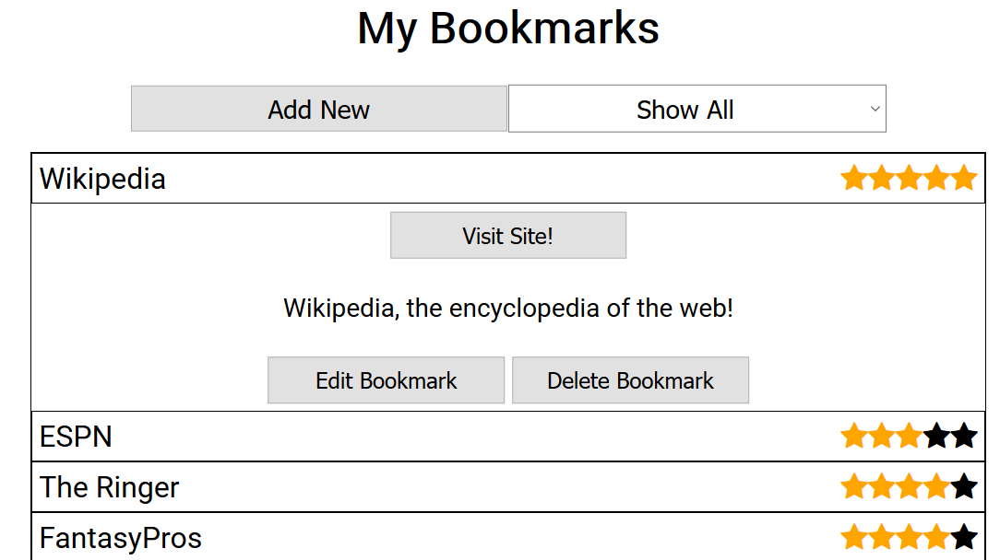

Projects
NFL Records Quiz

A quick and easy NFL records-themed quiz app that presents users with a series of multiple-choice questions and keeps track of the user's score. I built this app to test my JQuery and Javascript skills.
Bookmarks App

Bookmarks app connected to Thinkful's Bookmarks API. Users can save bookmarks with a title, rating, and description, edit bookmarks, and expand an individual bookmark to view details. I built this app to practice working with making API calls.